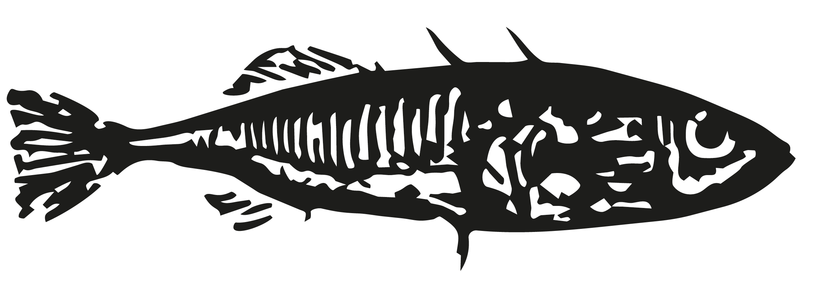
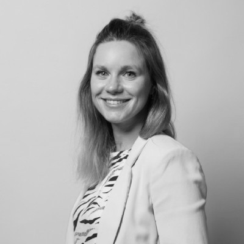

Tegen de stroom in
Om juist in deze tijd je idealen waar te maken heeft Buro Stekelbaars een eigen methode ontwikkeld: Het STROOM-model. Een model om niet alleen een communicatiestrategie te ontwikkelen, maar ook uit te voeren. Stap voor stap, en gedisciplineerd.


Het STROOM-model
Uniek aan ons model is dat het begint bij persoonlijk leiderschap. De leider van de organisatie zet immers de koers uit en is verantwoordelijk voor het eindresultaat. Daarom begint een traject met onze eigen hot seat, waarin we de leider uitvragen naar diens idealen.
Vanuit daar ontwikkelen we samen met het team een gedragen narratief, communicatiestrategie en desgewenst de (creatieve) uitwerking daarvan, waarbij er veel aandacht is voor het gebruik ervan door de hele organisatie. Een sterk narratief werkt immers disciplinerend en geeft richting.
Ons STROOM-model zorgt daarnaast niet alleen voor een scherp narratief en positionering, maar is juist gericht op de uitvoer in de praktijk. We geloven daarbij sterk in een organic first-aanpak. Dit betekent dat je eerst inzet op PR, public affairs en je eigen kanalen om vervolgens desgewenst je betaalde campagnes te doen.
In al deze fases checken we regelmatig in bij de leider van de organisatie en kunnen we diegene begeleiden met bijvoorbeeld de eigen socials. interviews en speeches.

Buro Stekelbaars heeft dezelfde mentaliteit als wij; energiek, creatief en benaderbaar. Toen we hen spraken wisten we meteen dat we een partner hadden gevonden die ons strategisch uitdaagt en de lat creatief hoog legt. We hebben er vertrouwen in dat we met hen het verschil kunnen maken voor al die duizenden mensen en hun naasten die elk jaar deze diagnose krijgen. Iedereen moet voelen wat de impact van parkinson is.
Stap voor stap
-
Scharnierpunt 1
De leider
Ons model begint bij de leider van de organisatie. De S van Self. Voor iedere organisatie — ook internationale organisaties of reeds bestaande merken — is deze stap in het huidige landschap cruciaal. De koers wordt bepaald door de leider die op dat moment aan het roer staat. Diegene heeft een ideaal, voelt zich verantwoordelijk en zoekt naar de juiste woorden en beelden.
Beschouw onze hot seat sessie als de ultieme briefing waarin we dit doorgronden. Wat wil jij precies bereiken? Wat staat dit in de weg? Wie heb je nodig? Wat zijn concrete doelen? Na deze fase staat er een kraakheldere positionering, weten we precies wat jouw visie is en hoe we tegen de stroom ingaan.
-
Scharnierpunt 2
Het Team
Natuurlijk gaat het niet alleen om de leider. Het Team daaromheen is net zo cruciaal. Samen met de sleutelpersonen in de organisatie gaan we aan het werk. Wat betekent dat ideaal voor het communicatieteam? Voor het operationele team? Voor onderzoekers of beleidsmedewerkers? Hoe houden we hier samen aan vast en vertellen we dit aan anderen?
Wie hebben we buiten de organisatie nodig om het voor elkaar te krijgen? We schaven, oefenen en leren van elkaar. Zo formuleren we hier ons gezamenlijk narratief. We scherpen ons STROOM-plan steeds verder aan.
-
Scharnierpunt 3
Relevantie
Wij mogen dat narratief geweldig vinden, uiteindelijk is er veel meer draagkracht nodig om echt iets te veranderen. Tijd om te onderzoeken waar de Relevantie zit. Wat speelt er NU in onze maatschappij? Hoe verbinden we jouw verhaal aan waar mensen in Nederland ’s nachts van wakker liggen? Aan onderwerpen waar journalisten al mee bezig zijn?
Onze diepgewortelde kennis van de sociale, politieke en culturele context zorgt ervoor dat wij feilloos weten te destilleren wat relevant is. We zetten media-analyse, social listening en eigen onderzoek in om een onwrikbare strategie te formuleren. We onderzoeken, valideren en testen. Hoe landt de boodschap? We passen aan waar nodig en zijn klaar om naar buiten te gaan. De strategie is af. Tijd om ons ideaal te realiseren.
-
Scharnierpunt 4
Organisch
In het speelveld van nu moet je aandacht verdienen, het is niet zomaar meer te koop. Wij staan voor communicatie die vertolkt wordt door authentieke, menselijke stemmen die de aandacht weten te grijpen. Daarom geloven wij bij Stekelbaars dat juist in deze tijden Organisch bereik belangrijker is dan ooit.
Een maatschappelijk relevant verhaal en karakteristieke vertolkers zijn de sleutel-ingrediënten. Via organic social, PR, Public Affairs en eigen evenementen vertellen we zelf ons verhaal en zorgen we dat anderen met ons mee zwemmen en ons verhaal verder vertellen. We monitoren en optimaliseren voortdurend. Samen gaan we tegen de stroom in.
-
Scharnierpunt 5
Campagne Offensief
Wanneer we via een organische aanpak de sweetspot tussen het eigen verhaal en maatschappelijke relevantie hebben gevonden, kunnen we op een slimme en efficiënte manier grote campagnes inzetten om het grote publiek te activeren en mee te krijgen. Buro Stekelbaars werkt hiervoor samen met de beste bureaus van Nederland.
-
Scharnierpunt 6
Het ideaal
We blijven volhouden tot die Maatschappelijke verandering gerealiseerd is. We hebben ons ideaal waargemaakt. Natuurlijk stopt het dan niet, er zijn nieuwe uitdagingen, de wereld verandert. Maar je hebt wel iets teweeg gebracht. Nu ligt er een belangrijke rol als thought leader. Hoe heb je dit voor elkaar gekregen en wat is er nu weer nodig? Inspireer anderen.